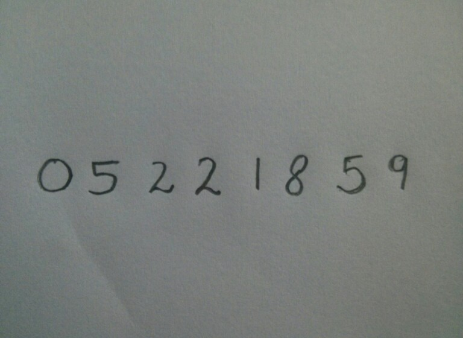

Sklearn
Scikit-learn is a free software machine learning library for the Python programming language. It features various classification, regression and clustering algorithms including support vector machines, random forests, gradient boosting, k-means and DBSCAN, and is designed to interoperate with the Python numerical and scientific libraries NumPy and SciPy.
Train Model on MNIST dataset
The MNIST database of handwritten digits, available from this page, has a training set of 60,000 examples, and a test set of 10,000 examples. It is a subset of a larger set available from NIST. The digits have been size-normalized and centered in a fixed-size image.
Let’s look at an code :
# Import the modules
from sklearn.externals import joblib
from sklearn import datasets
from skimage.feature import hog
from sklearn.svm import LinearSVC
import numpy as np
from collections import Counter
# Load the dataset
dataset = datasets.fetch_mldata("MNIST Original")
# Extract the features and labels
features = np.array(dataset.data, 'int16')
labels = np.array(dataset.target, 'int')
# Extract the hog features
list_hog_fd = []
for feature in features:
fd = hog(feature.reshape((28, 28)), orientations=9, pixels_per_cell=(14, 14), cells_per_block=(1, 1), visualise=False)
list_hog_fd.append(fd)
hog_features = np.array(list_hog_fd, 'float64')
print ("Count of digits in dataset", Counter(labels))
# Create an linear SVM object
clf = LinearSVC()
# Perform the training
clf.fit(hog_features, labels)
# Save the classifier as pkl file
joblib.dump(clf, "digits_cls.pkl", compress=3)
Recognize digits from image
Here are our input :
Let’s look at an code :
# Import the modules
import cv2
from sklearn.externals import joblib
from skimage.feature import hog
import numpy as np
# Load the classifier
clf = joblib.load("digits_cls.pkl")
# Read the input image
im = cv2.imread("photo_1.jpg")
# Convert to grayscale and apply Gaussian filtering
im_gray = cv2.cvtColor(im, cv2.COLOR_BGR2GRAY)
im_gray = cv2.GaussianBlur(im_gray, (5, 5), 0)
# Threshold the image
ret, im_th = cv2.threshold(im_gray, 90, 255, cv2.THRESH_BINARY_INV)
# Find contours in the image
_,ctrs, hier = cv2.findContours(im_th.copy(), cv2.RETR_EXTERNAL, cv2.CHAIN_APPROX_SIMPLE)
# Get rectangles contains each contour
rects = [cv2.boundingRect(ctr) for ctr in ctrs]
# For each rectangular region, calculate HOG features and predict the digit using Linear SVM.
for rect in rects:
# Draw the rectangles
cv2.rectangle(im, (rect[0], rect[1]), (rect[0] + rect[2], rect[1] + rect[3]), (0, 255, 0), 3)
# Make the rectangular region around the digit
leng = int(rect[3] * 1.6)
pt1 = int(rect[1] + rect[3] // 2 - leng // 2)
pt2 = int(rect[0] + rect[2] // 2 - leng // 2)
roi = im_th[pt1:pt1+leng, pt2:pt2+leng]
# Resize the image
roi = cv2.resize(roi, (28, 28), interpolation=cv2.INTER_AREA)
roi = cv2.dilate(roi, (3, 3))
# Calculate the HOG features
roi_hog_fd = hog(roi, orientations=9, pixels_per_cell=(14, 14), cells_per_block=(1, 1), visualise=False)
nbr = clf.predict(np.array([roi_hog_fd], 'float64'))
cv2.putText(im, str(int(nbr[0])), (rect[0], rect[1]),cv2.FONT_HERSHEY_DUPLEX, 2, (0, 255, 255), 3)
# Display image with output text
cv2.imshow("Resulting Image with Rectangular ROIs", im)
cv2.waitKey(0)
cv2.destroyAllWindows()
Our Output image will look like this: